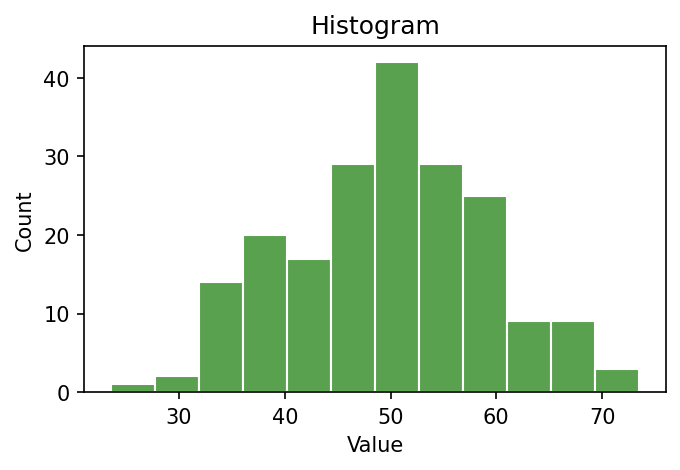
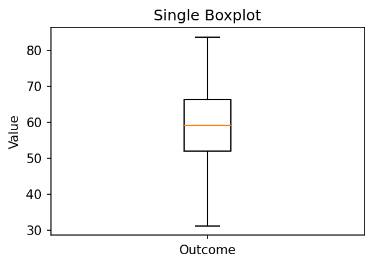
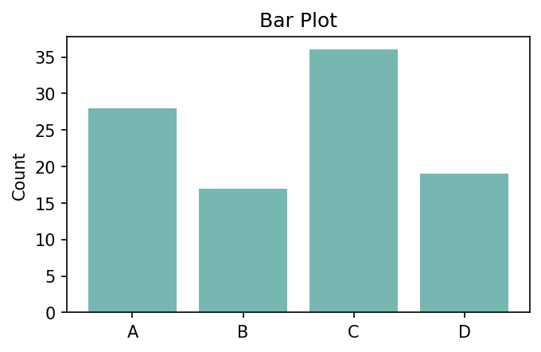
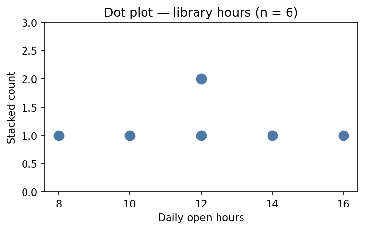
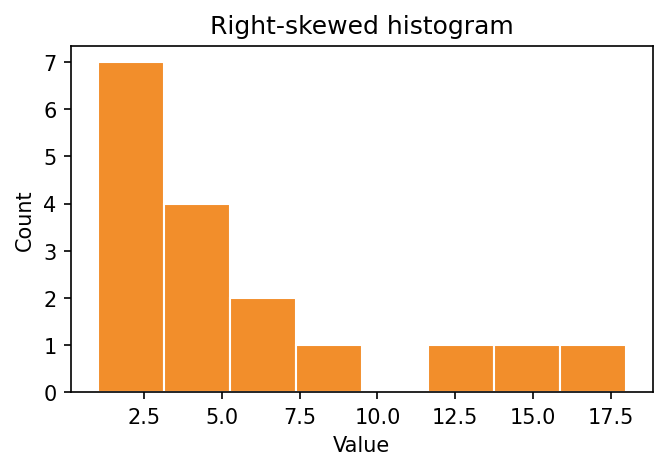
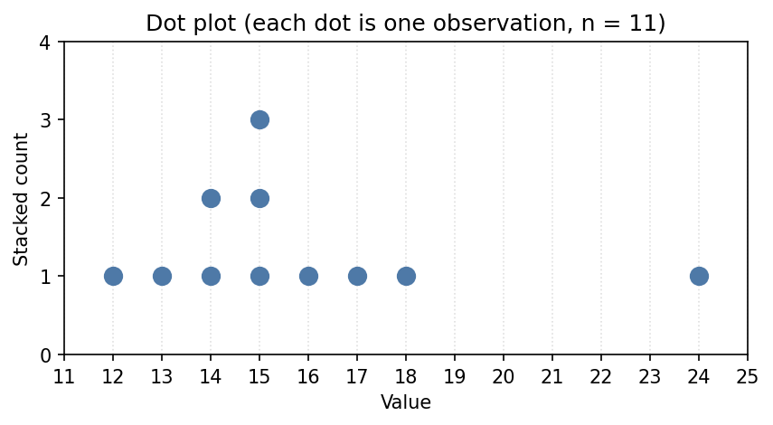
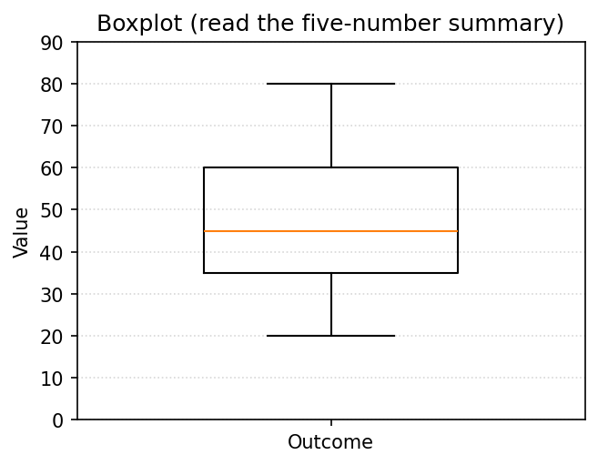

Module 3 — Quiz A (Def & Notation)
Question bank · After Read 1 · open notes · unlimited attempts
Module 3, Quiz A: Definitions & notation
Reading: Module 3 Read 1
Project: Project 3 · Canvas: Def & Notation quiz (Module 3)
Work these practice items after Read 1 (Sections 1–3: one categorical, one numerical, numerical × categorical). Sections cover: variable types, hand computation (counts, proportions, IQR, five-number summary), plot identification, and graph image items. (R/tidyverse questions live in the Synthesis quiz.)
Graph application, scatter interpretation, and two-way tables → Quiz B after Read 2.
Section A — Variable types and one-variable summaries
A1. Numerical vs categorical
Classify each as numerical or categorical (and binary if categorical):
- Penguin flipper length (mm)
- Island: Biscoe / Dream / Torgersen
- Sex: male/female
- Clutch completion: yes/no
- Bill depth (mm)
A2. Best summary for one numerical variable
For one numerical variable, name one graph and two numeric summaries.
A3. Best summary for one categorical variable
For one categorical variable, name one graph and one numeric summary.
A4. Choosing median or mean by purpose
Your dataset has a few very large values. For which kind of question would you report the median, and for which the mean?
Section B — Spread: range, IQR, and standard deviation
B1. Range
Data: \(4, 6, 8, 10, 10, 12, 14, 16\). Compute the range.
B2. Quartiles and IQR
Dataset N: \(7, 8, 9, 10, 10, 11, 12, 13\). Find \(Q_1\), \(Q_3\), and IQR.
B3. Five-number summary
List the five numbers in the five-number summary in order.
B4. What a boxplot shows
Describe how a boxplot represents the five-number summary.
B5. SD interpretation
In words, what does the sample standard deviation \(s\) measure?
B6. IQR vs SD
When would you prefer IQR over SD to describe spread? Why?
Section C — Hand computation: counts and proportions
C1. Coffee order counts
Coffee shop (\(n = 12\) orders): Latte 5, Drip 4, Tea 3. How many Latte orders? What is \(\hat{p}\) for Latte?
C2. Survey yes/no
Survey (\(n = 20\)): Yes 13, No 7. Compute \(\hat{p}\) for Yes.
C3. Bird feeder species
Feeder (\(n = 30\) visits): Robin 12, Sparrow 11, Other 7. What proportion are Robin?
Section D — Compute each statistic by hand (one list: 7, 8, 9, 10, 10, 11, 12, 13)
D1. Mean by hand
Data (\(n = 8\)): \(7, 8, 9, 10, 10, 11, 12, 13\). Compute the mean \(\bar{x}\).
D2. Median by hand
Data (\(n = 8\)): \(7, 8, 9, 10, 10, 11, 12, 13\). Compute the median.
D3. Minimum
Data (\(n = 8\)): \(7, 8, 9, 10, 10, 11, 12, 13\). What is the minimum?
D4. Maximum
Data (\(n = 8\)): \(7, 8, 9, 10, 10, 11, 12, 13\). What is the maximum?
D5. First quartile \(Q_1\)
Data (\(n = 8\)): \(7, 8, 9, 10, 10, 11, 12, 13\). Compute \(Q_1\).
D6. Third quartile \(Q_3\)
Data (\(n = 8\)): \(7, 8, 9, 10, 10, 11, 12, 13\). Compute \(Q_3\).
D7. IQR by hand
Data (\(n = 8\)): \(7, 8, 9, 10, 10, 11, 12, 13\) (with \(Q_1 = 8.5\), \(Q_3 = 11.5\)). Compute the IQR.
D8. Sample SD by hand
Data (\(n = 8\)): \(7, 8, 9, 10, 10, 11, 12, 13\) (mean \(= 10\)). Compute the sample standard deviation \(s\).
Section E — Plot types: bar, pie, histogram, dot plot, boxplot (verbal)
E1. Bar chart purpose
You have species (Adelie / Chinstrap / Gentoo). Which graph shows counts per level?
E2. Pie chart vs bar
When is a pie chart acceptable for one categorical variable?
E3. Pie slice interpretation
A pie chart shows 30% Latte, 25% Drip, 45% Tea (\(n = 200\) orders). How many Tea orders?
E4. Histogram vs bar
Histogram bins a numerical variable; bar chart has one bar per category. Which fits flipper length (mm)?
E5. Dot plot use
When is a dot plot especially helpful for one numerical variable?
E6. Boxplot five-number summary
A boxplot shows min=5, \(Q_1=10\), median=12, \(Q_3=20\), max=50. Is the distribution skewed? Which way?
E7. Side-by-side boxplots
You compare body mass across three species. Name the graph.
E8. Histogram skew (verbal)
A histogram has a long right tail with most values piled on the left. Describe shape.
E9. Dot plot vs histogram
You have one numerical variable with \(n = 15\) observations and want to see every individual value. Dot plot or histogram?
Section F — Statistics: interpret counts, proportions, center, spread (≥3 each)
F1. Count interpretation
In a frequency table of species, the count \(n = 124\) for Gentoo. What does 124 mean?
F2. Total from counts
Counts: A=8, B=12, C=5. What is \(n\)?
F3. Proportion from count
\(x = 9\) successes out of \(n = 36\). State \(\hat{p}\).
F4. Mean vs median choice
Income data with a few very high earners. You want to describe a typical household. Report center with mean or median?
F5. SD interpretation 1
\(s = 2\) cm vs \(s = 15\) cm for the same variable. Which sample is more spread out?
F6. IQR interpretation
IQR = 4 vs IQR = 20 for two datasets. Which middle 50% is tighter?
F7. Range sensitivity
Why is range less useful than IQR when outliers exist?
Section G — Graph interpretation (images · Quiz A)
IMG4. Histogram interpretation

What does this graph primarily display?
IMG6. Single boxplot feature

In a boxplot, the horizontal line inside the box marks the:
IMG9. Bar plot variable type

The x-axis categories in a bar plot represent what variable type?
IMG12. Dot plot interpretation

What does this dot plot primarily display?
IMG13. Right-skewed histogram

Describe the shape of this histogram.
IMG14. Dot plot — estimate the center

Each dot is one observation. Which value best estimates the center (median) of this dot plot?
IMG15. Dot plot — estimate the range
Estimate the range (largest value minus smallest value) shown in this dot plot.
IMG16. Boxplot — estimate the IQR

Read this boxplot. Estimate the IQR (the height of the box, Q3 − Q1).